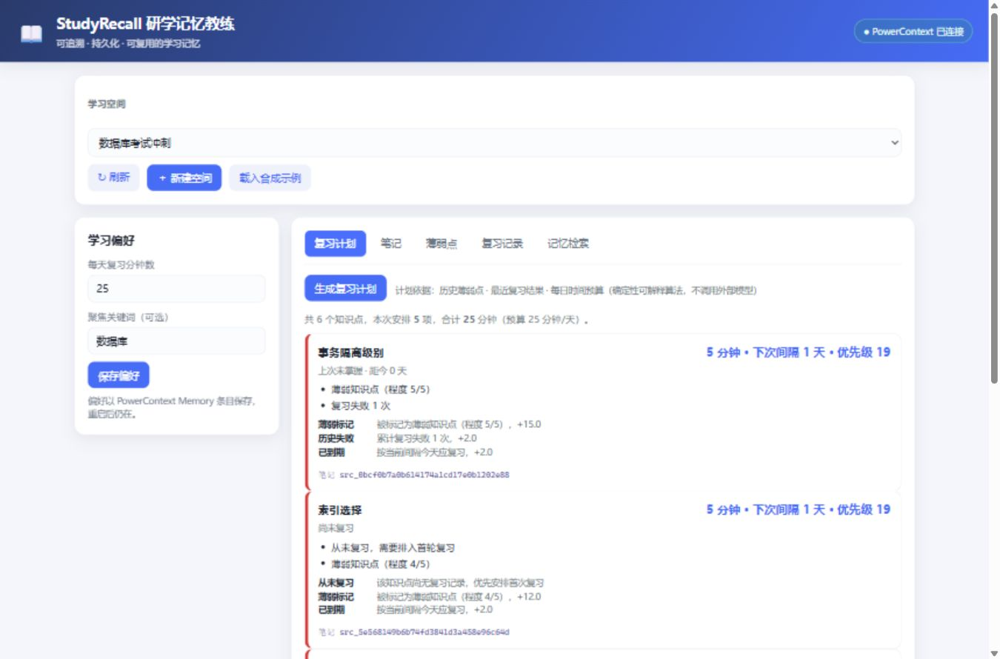
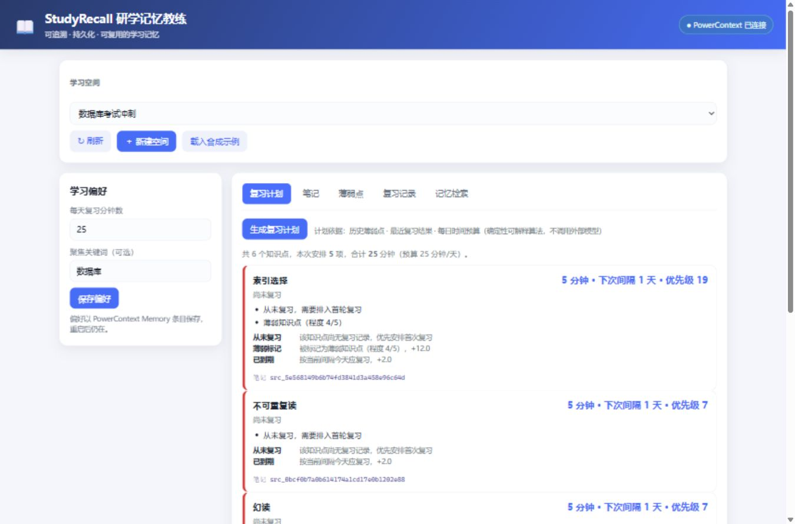
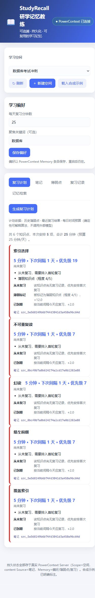

简介
StudyRecall 是一款中文优先的学习资料与复习进度管理工具。学习者建立学习空间、导入笔记并标注知识点，记录自评复习结果；再次打开时，应用依据既往记忆生成有解释、确定性可复现的复习计划。所有核心状态——空间、笔记、偏好、薄弱点、复习记录——都真实存放在 PowerContext 中，重启进程后仍可读取。
技术栈：Python 3.12 · FastAPI · 原生 HTML/CSS/JS · PowerContext 1.2.0（官方 PyPI 发布版，SQLite 持久化）· 无外部收费模型
运行时基线： PyPI powercontext[client,cli,server]==1.2.0（官方发布版）· 交付仓库 LiuHy318/powercontext @ feature/qoder-study-coach · 路径 qoder/study-coach/
注：官方 2026-competition-ecosystem 分支为空资产模板，不可 pip install 出 SDK；本项目在干净虚拟环境中用上述固定官方版本跑通全部 21 项测试。
解决的痛点
核心功能
PowerContext 的真实作用
- 空间隔离 由 PowerContext
Scope提供（create_scope/list_scopes，外部引用标签study-recall-space）。 - 笔记存储与回读 由 PowerContext
content Source提供（create_source/get_source/list_sources），返回真实source_id与sha256内容摘要作为来源引用。 - 分页完整性
list_scopes/list_sources逐页跟随 SDKnext_cursor直至取完，超过单页上限（100 条）也不会漏读；已由 101 笔记、101 空间的真实集成回归覆盖。 - 偏好 / 薄弱点 / 复习记录 由 PowerContext
Memory条目提供（remember_memory/revise_memory_entry/list_memory_entries）。 - 记忆检索 由
search_memory(mode=fts)提供，命中结果含真实引用。 - 复习排序与间隔由应用内确定性算法计算，不调用任何外部模型，可完全复现。
合成样例演示
合成演示数据 · 未连接真实数据库 · 仅示意输出形态场景：合成学习者「准备数据库考试，每天 25 分钟」，薄弱点为「事务隔离级别」「索引选择」，并记录了一次「索引选择」复习失败后生成的计划：
{
"daily_minutes": 25,
"planned_minutes": 25,
"items": [
{
"topic": "事务隔离级别",
"priority_score": 22.0,
"allocated_minutes": 5,
"next_interval_days": 1,
"reasons": ["从未复习，需要排入首轮复习", "薄弱知识点（程度 5/5）"]
},
{
"topic": "索引选择",
"priority_score": 16.0,
"allocated_minutes": 5,
"next_interval_days": 1,
"reasons": ["薄弱知识点（程度 4/5）", "复习失败 1 次"]
}
]
}
# 记为“已掌握”后重新生成：索引选择的下次间隔增大并暂时退出当日到期列表。
该输出形态取自真实应用的一次运行（见仓库 docs/VERIFICATION.md 中记录的实际命令与结果），此处为脱敏示例。
真实应用截图
真实应用界面 · 本地运行后由协调方 Codex 用浏览器采集 · 非设计稿 · 非 Qoder 原生对话截图下列图片来自 python scripts/run_all.py 启动的真实应用（真实 PowerContext 后端）。桌面视口 1365×900，移动视口 390×844。



如何复现
- 安装 PowerContext 官方发布版（干净虚拟环境）：
pip install "powercontext[client,cli,server]==1.2.0" - 安装应用依赖：
pip install -r requirements.txt - 一键启动真实后端 + 应用：
python scripts/run_all.py，浏览器打开http://127.0.0.1:8010 - 载入合成示例，走完“导入→失败→计划→掌握→重生成→重启恢复”验收流程
- 运行真实集成测试（会自启一个隔离的 PowerContext Server，共 21 项含分页与传输安全回归）：
python -m pytest -q
交付仓库：LiuHy318/powercontext · feature/qoder-study-coach · qoder/study-coach
参赛账号 UID：1912194676404092（用户确认，2026-11-15）。